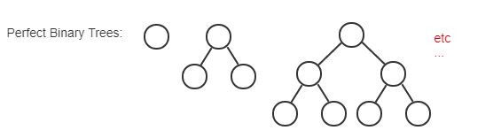

Recursion - The process of computing the value of a function using the result of the function on smaller input values.
In other words, it's a funciton that calls itself using a smaller value. It will keep calling itself until it hits a base case.
A famous example is factorials. For a factorial N:
function factorial (n) {
return ( n === 0 ? 1 : n * factorial(n-1) );
}
Components of a recursively defined set:
Basis - explicitly states that one or more specific elements are in the
set.
recursive rule - shows how to construct larger elements in the set from
elements already known to be in the set.
exclusion statement - states that an element is in the set only if it is
given in the basis or can be constructed by applying the recursive rules repeatedly to
elements given in the basis.
An example of this is found in figuring out if nested parenthesis are correct. The basis in this example is the sequence () is properly nested. This has two recursive rules:
Our exclusion statement is: a string is properly nested only if it is given in the basis or can be constructed by applying the recursive rules to strings in the basis.
So using our recursive rules: () is correct, (()) is correct [(u)], and ()() is correct [uv]

Recursive Algorithm - an algorithm that calls itself.